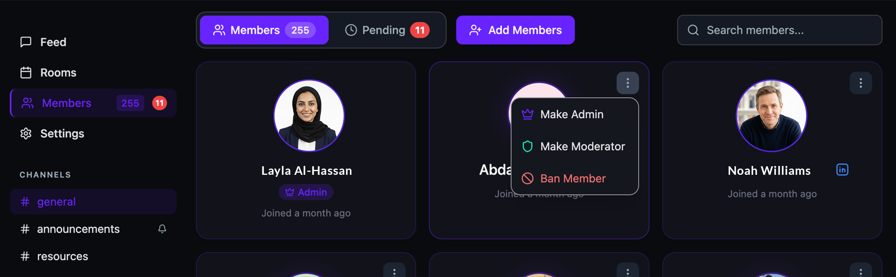
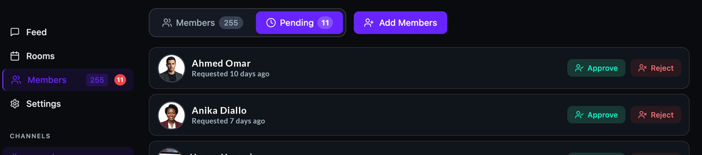

Manage community members
View your member list, approve or reject pending join requests, assign roles, add new members, and ban members who violate your community guidelines — all from the Members page.
Before you get started
- You must be a community Admin to manage members and assign roles.
Open the Members page
- Open your community.
- Click Members in the left sidebar. The badge shows your total member count and the number of pending requests.
The Members page has three controls at the top: Members (view all current members), Pending (view join requests awaiting approval), and Add Members (invite new people). Use the Search members... field to find a specific person.
View and manage members
- Click the Members tab to see all current members displayed as cards. Each card shows the member's photo, name, role badge, and join date.
- Click the three-dot menu (⋮) on a member's card to see the available actions:
- Make Admin — promote the member to Admin with full community control.
- Make Moderator — promote the member to Moderator so they can manage sessions, rooms, and courses.
- Ban Member — remove the member from the community and prevent them from rejoining.

Approve or reject pending requests
- Click the Pending tab. The badge shows the number of people waiting for approval.
- Each pending request shows the person's name, photo, and when they requested to join.
- Click Approve to accept the request and add them as a member.
- Click Reject to decline the request.

Tip: Pending requests only appear when your community's membership setting is set to Require approval. Communities set to Auto-approve accept all join requests automatically.
Add members
- Click Add Members at the top of the Members page.
- Search for people by name or email and add them to your community.
Tip: Use Add Members to directly invite people without waiting for them to request access — useful for onboarding teams or cohorts.